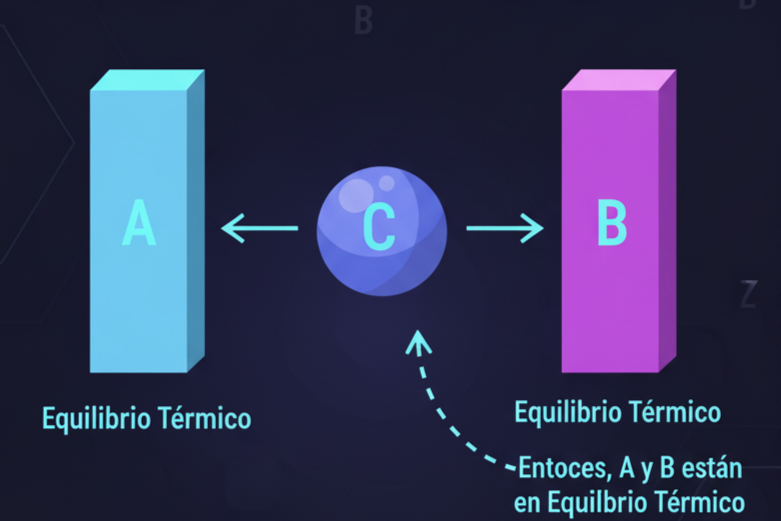
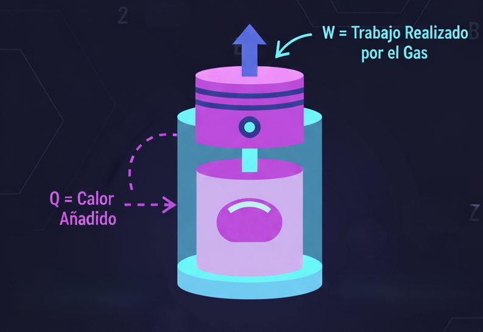
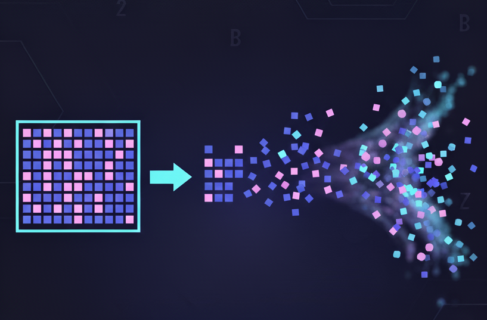
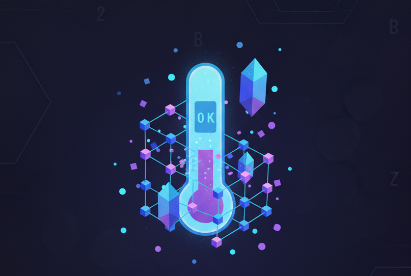

Leyes de la Termodinámica
Una exploración al corazón de la energía y el universo.
Ley Cero
Define el concepto de temperatura y el equilibrio térmico.

Primera Ley
La energía no se crea ni se destruye, solo se transforma.

Segunda Ley
La entropía (desorden) de un sistema aislado siempre tiende a aumentar.

Tercera Ley
Es imposible alcanzar la temperatura del cero absoluto (-273.15°C).

DONDE LA ENCONTRAMOS
La termodinámica es la base de todo lo que nos rodea: motores, refrigeración, y generación de energía.
Conclusión
Las 4 leyes de la termodinámica gobiernan la energía, la materia y el tiempo en el universo.
Gracias
Explicación de la Actividad
Antes de iniciar el juego de "¿Quién quiere ser millonario?", conoce las reglas:
- Dispones de 30 segundos por pregunta. El contador se reinicia en cada pregunta.
- Cuentas con 5 comodines de uso único para todo el concurso:
- 50/50: Elimina 2 incorrectas. ⚠️ -5s de penalidad.
- Tiempo extra ⏳: ¡Añade +10s al temporizador!
- Doble Oportunidad ✨: Te permite un segundo intento si fallas. ⚠️ -10s de penalidad.
- Pregunta al Oráculo 🔮: Revela un acertijo para ayudarte. ⚠️ -15s de penalidad.
- Ayuda del Público 🗳️: El tiempo restante se fija en 10s (es el tiempo que te queda).
Pregunta 1/5: ¿Qué concepto fundamental define la Ley Cero?
A:Entropía
B:Temperatura
C:Energía Cinética
D:Trabajo Mecánico
Pregunta 2/5: La Segunda Ley describe un proceso que es...
A:Reversible
B:Constante
C:Irreversible
D:Aislado
Pregunta 3/5: ¿Qué ley establece que la energía se conserva?
A:Primera Ley
B:Segunda Ley
C:Tercera Ley
D:Ley Cero
Pregunta 4/5: ¿Qué condición se considera imposible de alcanzar según la Tercera Ley?
A:Cero Grados Celsius
B:El Equilibrio Químico
C:Cero Absoluto
D:Máxima Entropía
Pregunta 5/5: ¿Cuál es el concepto central de la Segunda Ley?
A:Conservación de la masa
B:Trabajo mecánico
C:Entropía
D:Equilibrio térmico